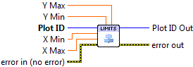

Set Axis Limits¶
Set explicit data limits for the X and Y axes. All inputs are optional.
-
 Plot ID/Plot ID Out
Plot ID/Plot ID Out - Plot identifier. Plot ID Out always contains the same value as Plot ID.
 X Min
X Min- Lower limit for X axis.
- X Max
- Upper limit for X axis.
- Y Min
- Lower limit for Y axis.
- Y Max
- Upper limit for Y axis.

 Error In/Out
Error In/Out- Terminals for standard error functionality.
Axis Types¶
This VI supports both rectangular and polar axes. However, for polar axes, only the Y (radial) limits may be specified. Providing values for X (angular) limits will result in error 402905 - Operation Not Supported for Polar Plot.
Errors¶
Other information¶
Non-finite values for limits (NaN or Inf) will be ignored. On a log-scaled plot, zero or negative limit values will also be ignored.